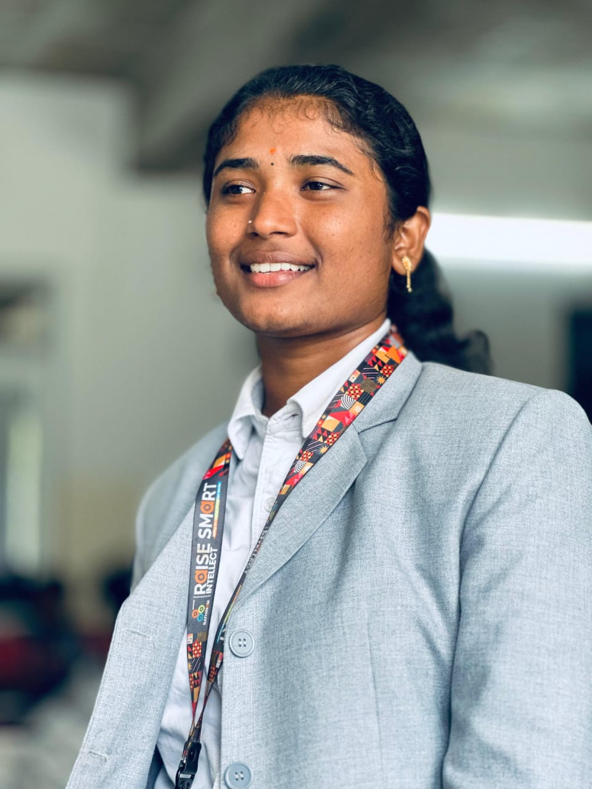

MY RESUME

S. RAJAPRIYA
B.E. Computer Science & Engineering
(Artificial Intelligence & Machine Learning)
Rathinam Technical Campus | Coimbatore, Tamil Nadu
📧
rajapriya1407@gmail.com
LinkedIn
GitHub
ABOUT ME
Motivated and creative second-year Artificial Intelligence &
Machine Learning student with an interest in UI/UX design,
AI-powered solutions, software development, and innovation.
Passionate about identifying real-world problems and transforming
them into practical, user-focused solutions. Experienced in
hackathons, project development, problem solving, and presenting
technical ideas.
CAREER OBJECTIVE
Motivated and creative second-year Artificial Intelligence &
Machine Learning student with an interest in UI/UX design,
AI-powered solutions, software development, and innovation.
Passionate about identifying real-world problems and transforming
them into practical, user-focused solutions. Experienced in
hackathons, project development, problem solving, and presenting
technical ideas. Looking for opportunities to learn, collaborate,
and build impactful technology solutions.
EDUCATION
Bachelor of Engineering – Computer Science & Engineering
Specialization:
Artificial Intelligence & Machine Learning
College:
Rathinam Technical Campus, Coimbatore
Expected Graduation: 2029
TECHNICAL SKILLS
Programming
Java
Python
HTML
C
Data Structures & Algorithms
AI & Technology
Artificial Intelligence
Machine Learning Fundamentals
Generative AI
Prompt Engineering
Design & Development
UI/UX Design
Figma
Prototyping
Responsive Web Design
Tools & Platforms
Git
GitHub
Canva
Google AI Studio
Gemini
Antigravity
Core Skills
Data Structures & Algorithms
Problem Solving
Object-Oriented Programming
Basic Web Development
PROJECTS
SMARTSERVE – AI-Powered Restaurant Ordering Experience
Role:
Problem Identification & Solution Innovation
Conducted field observation at a restaurant to understand
customer ordering delays.
Identified a gap between menu decision-making,
customer readiness, and server availability.
Designed an AI-assisted Smart Menu + Ready Alert solution.
Proposed AI-based menu recommendations and explanations
to help customers make faster decisions.
Designed a "Ready to Order" notification system to alert
servers when customers are ready.
Developed a web-based prototype to demonstrate the
proposed user experience.
Technologies:
AI, UI/UX, HTML, Antigravity, Canva
Automated Book Reading System Using OCR & Text-to-Speech
Hackathon Project:
Smart Horizon 2026
Designed a solution that converts printed book content
into speech using OCR and Text-to-Speech.
Proposed a system using a camera to capture printed text
and convert it into machine-readable content.
Designed the solution to support visually impaired,
print-disabled, elderly users, and students.
Explored integration of Raspberry Pi, camera module,
OCR, TTS, speaker, buttons, and LED indicators.
Technologies:
Python, OCR, Tesseract, Text-to-Speech,
Raspberry Pi, Computer Vision
HACKATHONS & ACHIEVEMENTS
Smart India Hackathon 2025 – Winner
Participated as a member of Team FAB 3.
Worked collaboratively to develop and present
a technology-based solution.
Gained experience in problem analysis, solution design,
rapid prototyping, and technical presentation.
Smart Horizon 2026 – International 48-Hour Hackathon
Selected for the Grand Finale of Smart Horizon 2026
at New Horizon College of Engineering, Bengaluru.
Worked on the theme Smart City.
Developed the concept of an Automated Book Reading
System Using OCR and Text-to-Speech.
Gained experience in rapid development, teamwork,
pitching, and solution architecture.
UI/UX INTERESTS
User Research
Problem Identification
User Journey Mapping
Wireframing
Prototyping
Interface Design
Usability & User-Centered Design
Figma
SOFT SKILLS
Creative Problem Solving
Communication
Team Collaboration
Leadership
Presentation
Critical Thinking
Adaptability
Innovation
Fast Learning
CERTIFICATIONS
Google AI – Coursera
Focus: Working Effectively and Responsibly with AI
Generative AI
AI Collaboration
Responsible AI
Prompt Engineering
AI Productivity
Additional Certifications
[Certification Name] – [Platform]
[Certification Name] – [Platform]
AREAS OF INTEREST
UI/UX Design
Artificial Intelligence
Generative AI
Product Design
Innovation
Entrepreneurship
Software Development
LINKS